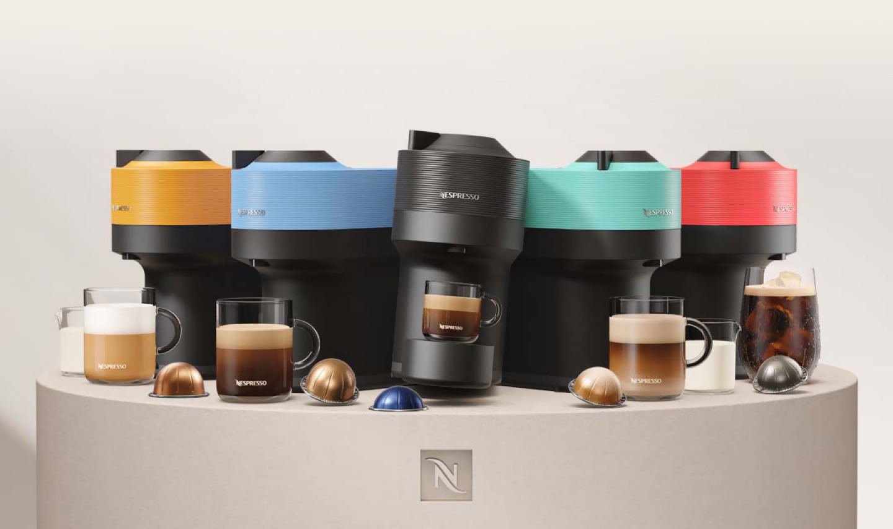

VERTUO POP
Le Café fait sa révolution en couleurs
Vertuo POP :
petite machine, grand café
- Design compact et élégant
- Technologie CentrifusionTM
- Une simple touche
- La qualité de café Nespresso dans 4 tailles de tasses
- Large variété de café

Design
-
Compact et coloré

Vertuo
-
Technologie de CentrifusionTM

4 tailles de tasses
-
de l’espresso (40 ml)
au mug (230 ml)

Eco-responsable
-
35% de plastique recyclé
et arrêt automatique